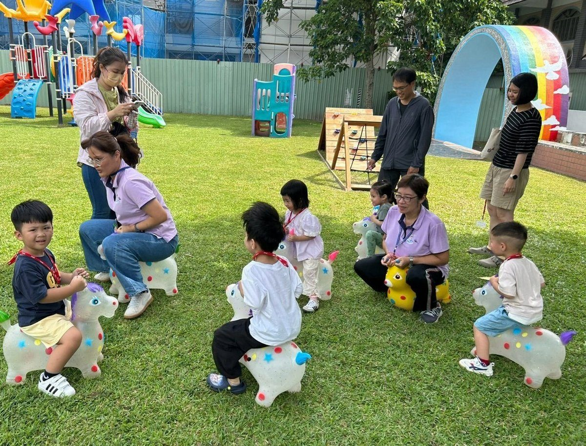

花蓮吉安幼兒園迎新 幼童齊賀父親節

可樂電子報小編/編輯
為協助新生學童順利展開學習旅程，花蓮吉安鄉立幼兒園於今（8）日上午舉辦「115學年度第一學期新生座談會」，邀請20位新生家庭參與「一日作息體驗」。活動旨在透過實際操作，讓親子熟悉園所環境與課程規劃，有效緩解入學前可能產生的分離焦慮，並即時建立良好的親師合作基礎，為學童的快樂成長奠定根基。

園方精心設計多樣化體驗環節，首先在充滿活力的升旗典禮與律動中，由護理師細心檢查幼童健康，隨後親子共同參與「陽光體操」活絡氣氛。接著進行「大肌肉運動」，幼幼班體驗趣味「跳跳馬」，小中大班則透過「螞蟻滾球遊戲」鍛鍊平衡感與肌耐力。活動並安排了「主題課程與學習區」體驗，由老師引導幼兒操作豐富教具，深化學習興趣。

鄉長游淑貞強調，教育的成功仰賴學校與家庭的緊密合作，吉安鄉公所與鄉立幼兒園透過舉辦親師座談，不僅增進家長對幼教核心理念的理解，更搭建了寶貴的意見交流平台。這些回饋將有助於鄉公所持續精進幼教政策，確保資源「更到位、更好」。鄉公所團隊已做好萬全準備，期待迎接所有寶貝，並歡迎家長們實地參觀，將孩子安心託付給鄉幼師資。

由於活動適逢父親節，現場幼童在老師引導下，齊聲向在場爸爸們獻上「父親節快樂」的祝福。這份純真溫暖的心意，令所有家長感動不已，為新生座談會增添了溫馨感人的氛圍，充分展現吉安鄉立幼兒園對家庭參與的重視與對學童多元發展的關懷。

▶ 延伸觀看
📺 相關報導影片：點此於 YouTube 觀看完整報導